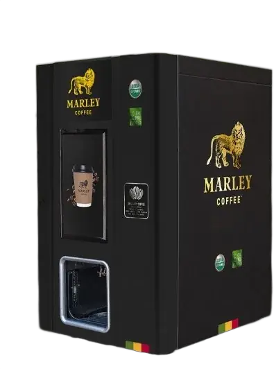
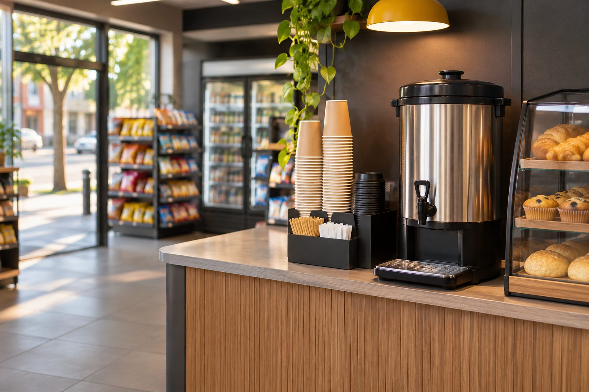

Marley Coffee · Empresas · Conveniencia

¿Cómo ofrecer café en una tienda de conveniencia?
Para evaluar café en una tienda de conveniencia, revisa espacio, flujo de clientes, bebidas que ofrecerás y quién se hará cargo del equipo. Compara capacidad, limpieza, insumos y reposición con la operación del local y confirma los términos por escrito.

Cómo funciona la evaluación
- Mapea el punto de venta: Mide el espacio, tránsito, conexiones y visibilidad del área de café.
- Elige el formato de atención: Define preparación asistida o autoservicio y las tareas de limpieza y reposición.
- Ajusta al flujo: Estima consumo por horario y revisa que el equipo y los insumos correspondan al local.
Compatibilidad, disponibilidad, servicios, soporte y condiciones comerciales se confirman para cada operación en una propuesta.
Qué comparar
| Local | Espacio, tránsito, conexiones y seguridad. |
|---|---|
| Preparación | Autoservicio o atención y bebidas previstas. |
| Abastecimiento | Consumo, plazo confirmado y reserva. |
Preguntas habituales de compradores
¿Qué máquina de café sirve para un minimarket?
Depende del espacio, el flujo, el menú y la forma de atención; compara esos datos con la ficha del modelo.
¿Cómo organizo la reposición de café?
Multiplica el consumo diario promedio por el plazo confirmado y suma la reserva que definas.
¿Qué requisitos de instalación debo revisar?
Consulta conexiones, espacio, limpieza, seguridad del área y las instrucciones del fabricante.